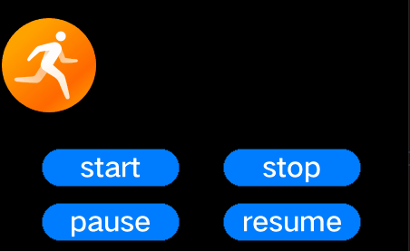

Development Guidelines on Animators¶
When to Use¶
A UI animator is implemented by calling the callback function you set for each tick using the task processing mechanism. The following classes are provided for you to implement an animator:
AnimatorManager: Manages Animator instances. This is a singleton class, which is registered with the system task callback when the Init function is executed. The system task mechanism ensures that each tick invokes the callback function of AnimatorManager.
Animator: Represents animator-related attributes, including the start and end time of an animator. It also provides animator-specific functions, for example, to start and stop an animator, to set the animator state, and to obtain the animator.
AnimatorCallback: Implements the content of each tick. You need to implement your own logic in this callback class so that the desired operation is executed upon the corresponding callback is invoked.
Available APIs¶
Table 1 Available functions for an animator
Module | Function | Description |
|---|---|---|
Animator | void Start () | Starts an animator. |
Animator | void Stop () | Stops the animator. |
Animator | void Pause () | Pauses the animator. |
Animator | void Resume () | Resumes the animator. |
Animator | uint8_t GetState () const | Obtains the current state of the animator. |
Animator | void SetState (uint8_t state) | Sets the current state for the animator. |
Animator | uint32_t GetTime () const | Obtains the total duration of the animator. |
Animator | void SetTime (uint32_t time) | Sets the total duration for the animator. |
Animator | uint32_t GetRunTime () const | Obtains the running time of the animator. |
Animator | void SetRunTime (uint32_t runTime) | Sets the running time for the animator. |
Animator | bool IsRepeat () const | Checks whether the animator is repeated. |
AnimatorCallback | virtual void Callback (UIView *view)=0 | Represents the animator callback. You can implement your own logic in this callback. |
AnimatorCallback | virtual void OnStop(UIView& view) {} | Called after the animator stops. You can implement your own logic in this callback. |
AnimatorManager | static AnimatorManager* GetInstance() | Obtains an AnimatorManager instance. |
AnimatorManager | void Add (Animator *animator) | Adds an animator. |
AnimatorManager | void Remove(const Animator* animator); | Removes the animator. |
How to Develop¶
Implement the callback in AnimatorCallback.
class AnimatorCallbackDemo : public OHOS::AnimatorCallback { public: AnimatorCallbackDemo(int16_t startPos, int16_t endPos, uint16_t time) : start_(startPos), end_(endPos), time_(time), curTime_(0) {} virtual void Callback(OHOS::UIView* view) { curTime_++; int16_t pos = EasingEquation::CubicEaseIn(start_, end_, curTime_, time_); view->Invalidate(); view->SetPosition(pos, view->GetY()); view->Invalidate(); } protected: int16_t start_; int16_t end_; uint16_t time_; uint16_t curTime_; };
Register AnimatorCallback to the animator.
UIImageView* image = new UIImageView(); image->SetSrc("..\\config\\images\\A021_001.bin"); image->SetPosition(0, 50); AnimatorCallbackDemo* callback = new AnimatorCallbackDemo(0, 338, 60); Animator* animator = new Animator(callback, image, 0, true);
Add the animator to AnimatorManager.
AnimatorManager::GetInstance()->Add(animator);
Click the buttons in the lower part of the following figure to verify that the animation effects are as expected.
Figure 1 Animator effect